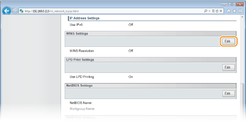
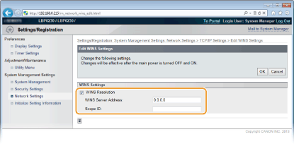

0KU8-02E
O Windows Internet Name Service (WINS) é um serviço de resolução de nome que associa um nome NetBIOS (um nome de computador ou impressora em uma rede NetBIOS) com um endereço IP. Para usar o WINS, é preciso especificar um servidor WINS.
|
|
|
Para registrar esta impressora com um servidor WINS, um nome NetBIOS e nome de grupo de trabalho precisam ser definidos. Configurando o NetBIOS
Esta função não está disponível em um ambiente IPv6.
|
1
Inicie o Remote UI e faça o logon no modo Administrador Sistema. Iniciando o Remote UI
2
Clique em [Settings/Registration].

3
Clique em [Network Settings]  [TCP/IP Settings].
[TCP/IP Settings].

4
Clique em [Edit] em [WINS Settings].

5
Marque a caixa de seleção [WINS Resolution] e digite as informações necessárias.

[WINS Resolution]
Marque a caixa de seleção para usar o WINS para a resolução de nome. Quando você não estiver usando o WINS, desmarque a caixa de seleção.
Marque a caixa de seleção para usar o WINS para a resolução de nome. Quando você não estiver usando o WINS, desmarque a caixa de seleção.
[WINS Server Address]
Digite o endereço IP (IPv4) do servidor WINS.
Digite o endereço IP (IPv4) do servidor WINS.

Se o endereço IP do servidor WINS for obtido de um servidor DHCP, o endereço IP obtido sobrescreve o endereço IP inserido na caixa de texto [WINS Server Address].
[Scope ID]
Se a rede for dividida em diversos grupos com IDs do escopo (identificadores de grupos dos dispositivos na rede), digite até 63 caracteres alfanuméricos para o ID do escopo. Deixe a caixa de texto em branco se não houver nenhum ID do escopo definido para o seu computador.
Se a rede for dividida em diversos grupos com IDs do escopo (identificadores de grupos dos dispositivos na rede), digite até 63 caracteres alfanuméricos para o ID do escopo. Deixe a caixa de texto em branco se não houver nenhum ID do escopo definido para o seu computador.
6
Clique em [OK].
7
Reinicie a impressora.
Desligue a impressora, espere pelo menos 10 segundos e ligue novamente.